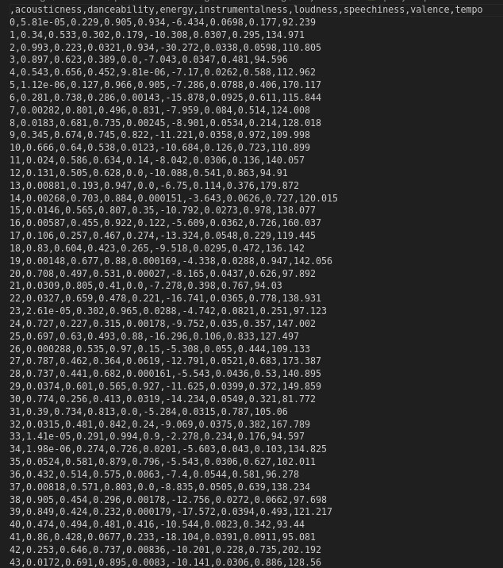
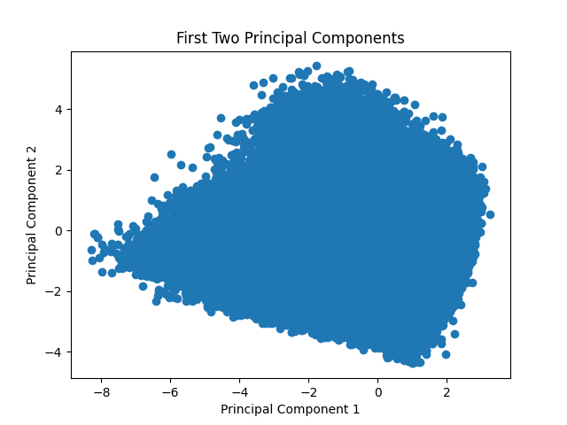
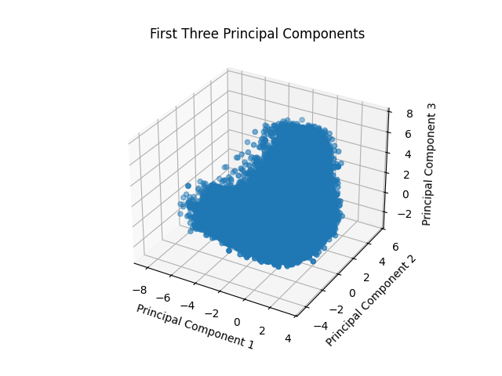
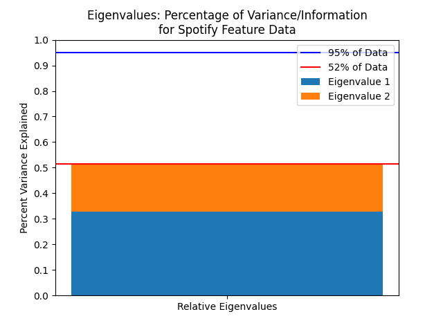
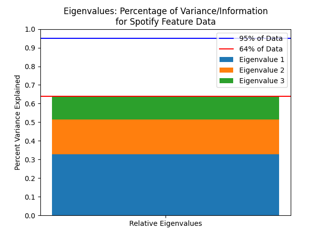
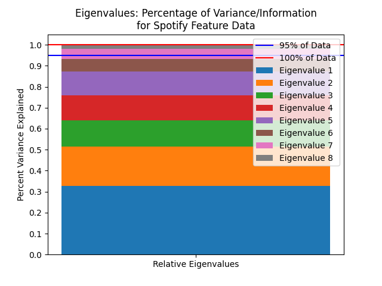
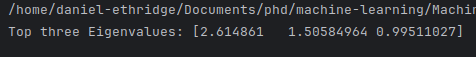
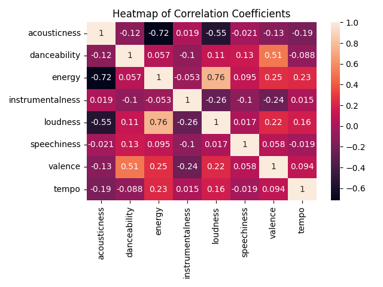

Principal Component Analysis
What is PCA?
Oftentimes, there is collinearity in datasets. In other words, all the features or variables in a dataset might not be independent. Principal Component Analysis, or PCA, is an unsupervised algorithm with the goal of transforming this collinear data into uncorrelated features. These features returned are called the principal components. By definition, the first principal component, or PC, looks for a vector in the direction of maximum variance of the data. In other words, the first PC looks to explain as much of the variation in the data as it can. The second PC does the same thing with one important constraint: the second PC must be orthogonal (i.e. perpendicular) to the first PC. In being orthogonal, the two PCs are independent! This pattern continues such that the 3rd PC must first be orthogonal to the first and second PC and it is in the direction of maximum variance given that contstraint. The 4th is orthogonal to the first, second, and third PC and looks for maximum variance again, and the pattern continues. By explaining the remaining maximum variance with every new PC, the first few PCs often contain the majority of the data. This facts lets us use PCA for dimensionality reduction granted the data features are collinear.
The number of PCs that can be calculated from a dataset is equal to the number of features in the data. For example, imagine a csv file about plants with a label saying what the plant is and four different measurements about the plant; maybe these are height, width, color, and leaf size. In this example, the maximum number of PCs able to be extracted is four. It is not 5 because we do not include the label of a dataset in PCA.
To showcase PCA, we will run the Spotify feature data through the algorithm. A full python script can be found here and data is here.
PCA with the Spotify Data
The screenshot below shows the raw data before any cleaning:

We can remove non-quantitative columns, and the data now looks like this:

At this point, we need to normalize the data and run PCA. First we will run PCA and extract two components. To do this, see the code below. This code reads in the original spotify.csv file, and goes through the process to completely perform pca.
# Import necessary packages
from sklearn.preprocessing import StandardScaler
from sklearn.decomposition import PCA
import pandas as pd
# Read in data and prep
orig_df = pd.read_csv(SPOTIFY_DATA, index_col=0)
df = orig_df.copy()
df = df.drop(["spotify_id", "lastfm_id", "mode", "manual_check"], axis=1)
# Create instance of StandardScaler with default arguments and scale the data
scaler = StandardScaler()
scaled_df = scaler.fit_transform(df)
# Perform PCA and get the first two components.
pca = PCA(n_components=2)
pca_spotify = pca.fit_transform(scaled_df)
Plotting the two PCs produces the following: 
We can run the code above again except this time with pca = PCA(n_components=3) and plot that. Below is the same data plotted both as a 3D plot and as a 2D plot with the 3rd PC represented as color.


How much is data is in the first few components?
It is impossible to reduce dimensionality without losing information. The question is what is a reasonable tradeoff between a lower dimensional space and having enough information. How much data do we retain after doing PCA? We can see this by looking at the ratio of explained variance of each PC. In mathematical terms, this is equivalent to looking at the ratios of each individual eigenvalues to the sum of all the eigenvalues.   To keep 95% of the data, we can only throw away the last PC. It could be worth it to discard the last two and accept maybe keeping 93% of the data. In that case, PCA allows us to reduce our dimensionality by 25%. The top three eigenvalues of the data are shown below: 
This provides some insight into why PCA doesn't work incredibly well for this data. Furthermore, we can observe the following heatmap. 
Note that sparsity of any strong correlations (|r| > 0.5). There are only 4 strong correlations out of a possible 28. PCA works best when data is collinear, but the Spotify data does not have that much collinearity.